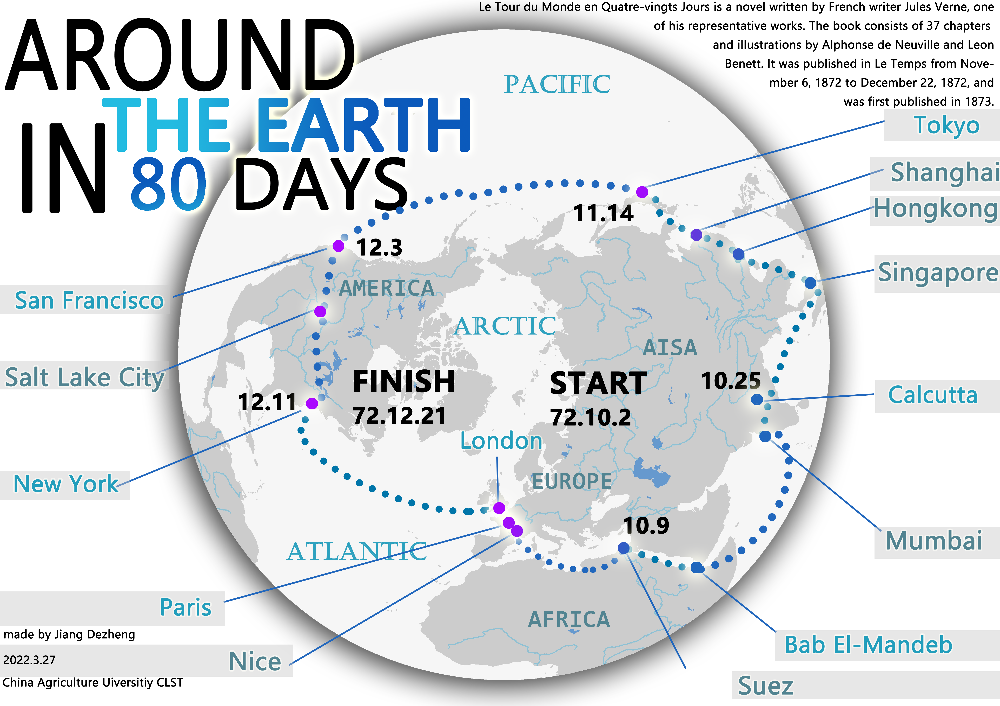
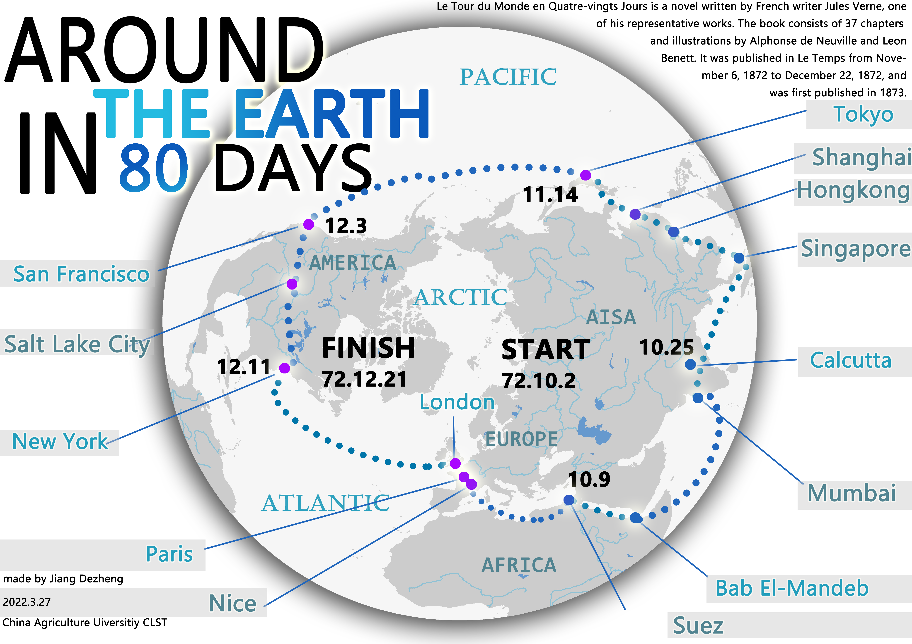

About me
蒋德正 Jiang Dezheng中国农业大学 地理科学类 本科在读
Atlas
2024
To be continue...
2023
From World Cup History to Qatar 2022 世界杯专题地图

济南零号线：“地铁荒漠”天生的轨道交通网络

京津冀城镇化进程下的土地利用变化分析组图

2022
开天辟地——从长征到长江：革命历程组图
待找原图
八十天环游地球路线图
欢迎来到我的地图作品集
中国农业大学 地理科学类 本科在读
To be continue...
From World Cup History to Qatar 2022 世界杯专题地图
济南零号线：“地铁荒漠”天生的轨道交通网络
京津冀城镇化进程下的土地利用变化分析组图
开天辟地——从长征到长江：革命历程组图
待找原图
八十天环游地球路线图
电子邮箱 | E-mail：jdz2003@cau.edu.cn / jiesren@gmail.com
微信公众号 | Wechat Public：万里地